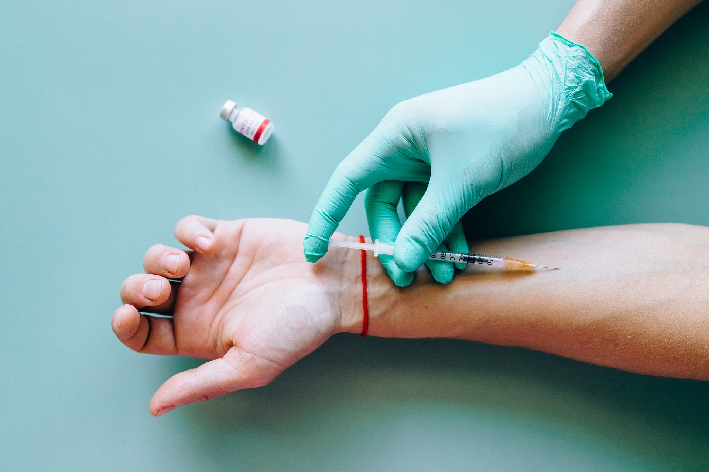

Can Vaccinated People Transmit COVID-19 to Others?
Get the answer from an infectious disease specialist
We’ve heard it all since the pandemic started — lemon juice can kill the coronavirus, masks don’t work, if you
already had COVID-19 you can’t get it again or that the vaccines approved for emergency use will change your
DNA or put a tracking device in your body.
Send Us Email
It’s almost like we need a strong dose of something to knock out all of the misinformation. But despite all the
myths and urban legends, about half of the U.S. population is fully vaccinated.
Wonderful news, right?
Well, not to some. Vaccinated people are up against a new set of myths — they’re literally magnetic or they’re
going to shed vaccine components and alter the DNA of unvaccinated people. And despite the extra layer of
protection, they still have to grapple with the same pandemic realities as everyone else.
So, what do vaccinated people need to do to stay safe? And is it still possible for them to spread COVID-19 to
others? Infectious disease specialist Lyssette Cardona, MD, answers those questions and covers why
vaccination is still one of our best weapons in the fight against COVID-19.